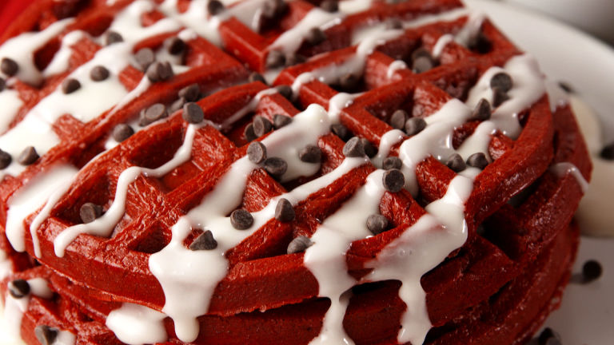
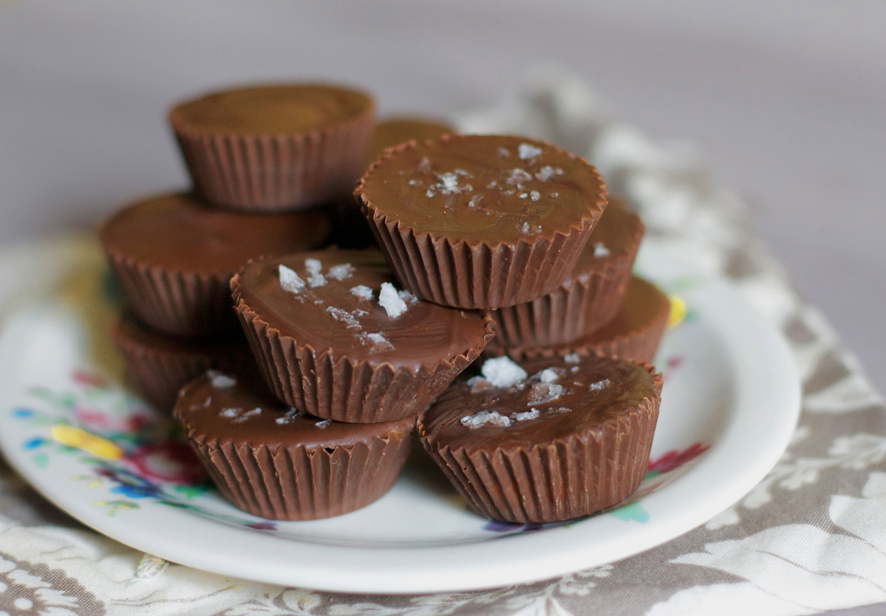
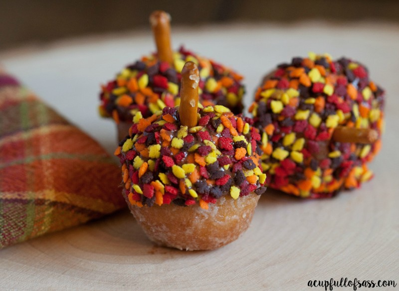
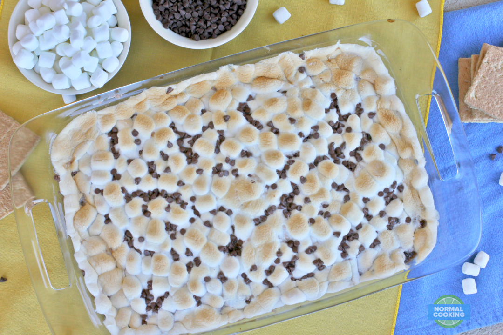

Looking for a good easy recipe or something to challenge yourself? Down below is our top picks for the week of cute and exciting desserts you can make at home!
| Ingredients | Directions |
|---|---|
| - 1 1/2 Sticks unsalted butter, softened
- 1 cup sugar |
Preheat oven to 350 degrees F. In a bowl, beat the butter and sugars until fluffy. Add vanilla and eggs and beat until combined. |
| - 1/2 cup brown sugar
- 2 eggs |
In a separate bowl, combine flour, salt and baking powder. Add mixture to wet ingredients and beat until just combined. Fold in 1 cup chocolate chips, and ½ cup sprinkles. |
| - 2 tsp. Pure Vanilla Extract
- 2 cup all-purpose flour |
Butter and flour an 8” x 11” pan. Transfer the batter to the pan, and top with remaining sprinkles. |
| - 1 tsp. salt
- 1/2 tsp. baking powder |
Bake for 30 minutes. Let cool. |
| - 1 1/2 cup white chocolate chips, divided
- 3/4 cup sprinkles, divided |
If you so choose, melt remaining white chocolate in microwave on 50% power in 15-second intervals. Once fully melted, drizzle over blondies. |
Take your love for red velvet to the next level!

| Ingredients | Directions |
|---|---|
| - 1 box red velvet cake mix - 4 eggs |
Preheat waffle maker on medium heat. |
| - 2 c. milk - nonstick cooking spray |
In a large bowl, mix cake mix, eggs, and milk. Whisk until fully combined and smooth. |
| - 4 tbsp. cream cheese, softened - 2 c. powdered sugar |
In a medium bowl, combine cream cheese, powdered sugar and milk.
Using a hand mixer, mix until smooth. Add more powdered sugar for a thicker glaze if desired. |
| - 1/4 c. whole milk - 1/2 c. Mini chocolate chips, for garnish |
Spray waffle iron with nonstick cooking spray. Pour batter into waffle iron and cook until done, about 6 minutes. |
| Plate waffles and drizzle over cream cheese glaze. Sprinkle with mini chocolate chips and serve. |
To any die hard Reese's fans, this might just replace it!

| Ingredients | Directions |
|---|---|
| - 4 cups semi sweet chocolate chips | Place cupcake wrappers in muffin tins. (You could use mini cupcake wrappers and muffin tins and make twice as many caramel cups) |
| - 2 cups caramels, unwrapped | Place chocolate chips in a microwave safe bowl. Microwave on half-power for 2 minutes. Take out and stir. Continue to cook on half-power for 20 seconds at a time, stirring between each, until chocolate is smooth. |
| - 3 tablespoons milk or heavy cream | Drop about 2 tablespoons of melted chocolate into each cupcake liner. Do not use all of the chocolate, leave about ¼ of it in the bowl. Use a pasty brush to "paint" the melted chocolate onto he bottom of the cupcake wrapper, and around the sides (only go about ⅔ of the way up the wrappers, not all the way to the top) Place muffin tin in the freezer. |
| - coarse sea salt | In another microwave safe bowl combine caramels and milk/heavy cream. Microwave on high for 2 minutes, then stir. Continue to cook on high for 20 seconds at a time, stirring between each until smooth. |
| Remove muffin tin from freezer. Pour caramel into chocolate cups til about ⅔ full. Return to the freezer for about 5 minutes. | |
| Remove muffin tin from freezer again. Use pastry brush to "paint" melted chocolate over the top of the caramel being sure to cover all of the caramel. Sprinkle with coarse sea salt. Return to the freezer for about 30 minutes. | |
| Remove muffin tin from freezer. Carefully peel away the cupcake wrappers from the chocolate cups. Store chilled (in the fridge) or at room temperature in an airtight container. |
If these don't get you pumped for fall then nothing will!

| Ingredients | Directions |
|---|---|
| - 1 tbsp. coconut oil - 1 c. melted chocolate |
In a small bowl, add coconut oil to melted chocolate and whisk to combine. |
| - Assorted sprinkles - Chopped peanuts |
Pour sprinkles and nuts into small bowls. |
| - 1 dozen glazed donut holes - 6 pretzel rods |
Dunk the end of a donut hole in the melted chocolate, then dip into sprinkles or nuts. Insert a pretzel rod into the center of the chocolate-dipped side of the donut hole. |
| Let chocolate sit for about 10 minutes before serving. |
No offense, campfire, but this might be the ultimate way to eat s'mores!

| Ingredients | Directions |
|---|---|
| - 5 oz pkg cook and serve chocolate pudding - 3 cups whole milk |
Prepare chocolate pudding with milk on stove top as directed on package. Allow to cool in pot for 15 minutes. |
| - 12 graham cracker squares - 3/4 cup miniature semi sweet chocolate chips |
Spread pudding evenly into the bottom of a 9 x 13 baking dish. Lay graham crackers evenly in pudding and sprinkle with 1/2 cup chocolate chips. |
| - 15 oz box chocolate cake mix, dry - 1/2 cup cold butter, sliced | Sprinkle dry cake mix over pudding and dot with slices of butter. Bake at 350 degrees for 25 minutes. |
| - 10 oz pkg miniature marshmallows whipped cream | Remove from oven and stir making sure any dry cake mix spots have be moistened. |
| Sprinkle evenly with marshmallows and remaining chocolate chips. Bake an additional 5 - 8 minutes or until marshmallows are puffy and brown. Allow cobbler to cool 15 minutes before serving. |